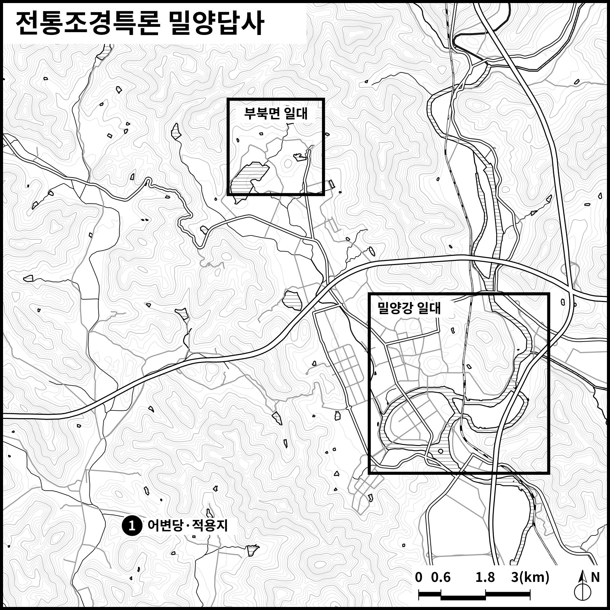
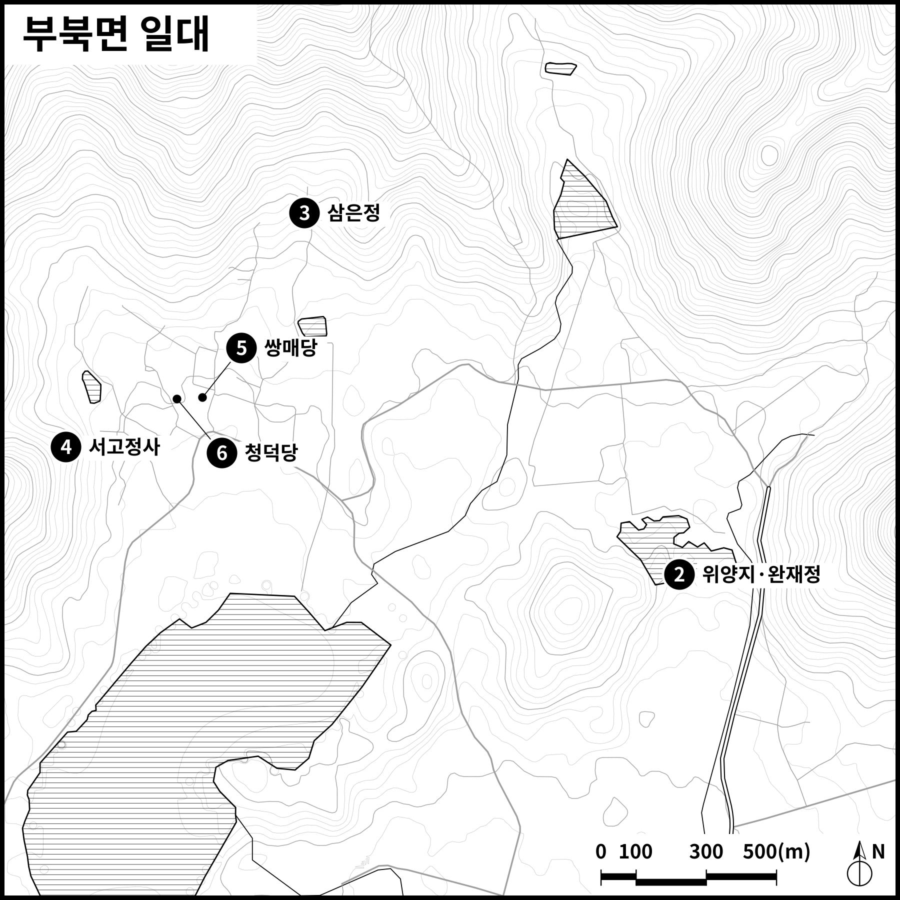
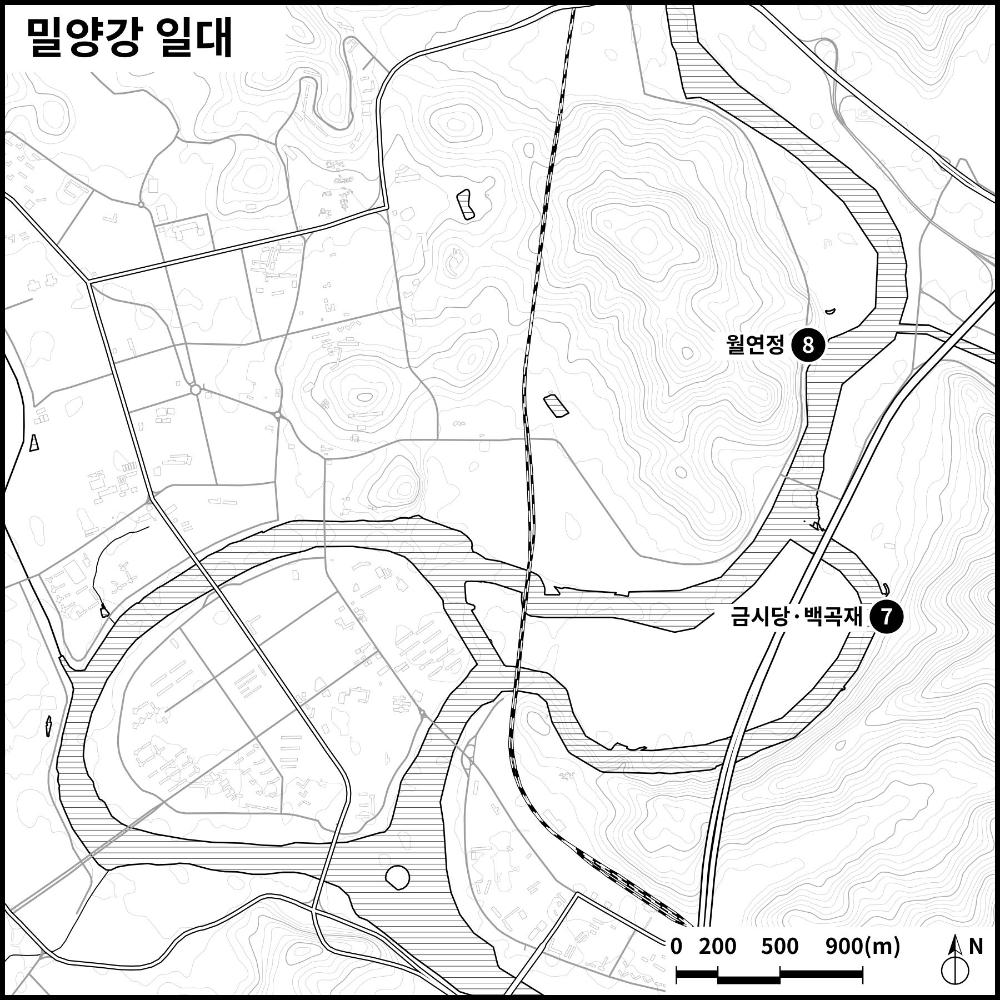

10월 25일(일) 밀양 일원
09:20 어변당 집결
- 경상국립대 칠암캠퍼스 출발 → 어변당
- 밀양역 출발 → 어변당
- 어변당·적용지
- 위양지·완재정
- 삼은정
- 서고정사
- 점심 · 소고기 전골
- 퇴로리 여주이씨 문중가옥 - 쌍매당, 청덕당
- 금시당·백곡재
- 월연정
- 저녁 · 밀양돼지국밥
답사지 위치
지도는 두 손가락으로 벌려 확대해 보세요. 번호는 지도 번호입니다.



09:20 어변당 집결
지도는 두 손가락으로 벌려 확대해 보세요. 번호는 지도 번호입니다.


